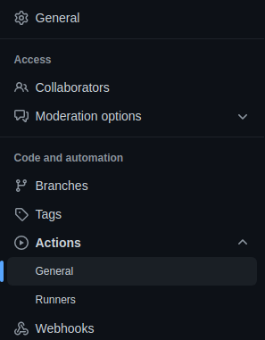
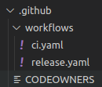

Introducción a GitHub Actions
GitHub Actions es una plataforma de automatización de GitHub. Se utiliza ampliamente con distintas plataformas y lenguajes de programación como, por ejemplo, C/C++, Go, Node.js, Rust y Python, para ejecutar las pruebas de unidad o de integración en distintos sistemas operativos como Linux o Windows. Además de para publicar paquetes automáticamente en algún registro como, por ejemplo, NPM.
Al finalizar, sabrá:
-
Qué es y para qué usar GitHub Actions.
-
Cómo configurar la funcionalidad de GitHub Actions.
-
Cuál es el directorio donde ubicar los flujos de trabajo de GitHub Actions.
Introducción
GitHub Actions es una plataforma de automatización de tareas proporcionada por GitHub. Sus principales funciones son:
-
Automatizar tareas de desarrollo de software.
-
Automatizar procesos de integración continua (CI).
-
Automatizar procesos de entrega y/o despliegue continuo (CD).
-
Integración de infrastructure as code.
Podemos crear flujos de trabajo que, por ejemplo, realicen la ejecución de las pruebas, el empaquetado del software, su versionado y publicación, etc. Estos flujos de trabajo pueden ejecutarse manualmente o, mejor aún, automáticamente, por ejemplo, cada vez que hagamos una confirmación o cerremos una solicitud de integración e incluso de manera periódica como a medianoche.
Tiene diversos planes de facturación, tanto gratuitos como de pago. Si el proyecto es público puede disponer, bajo el plan gratuito, de algunas características que no lo están si el repositorio es privado. En caso de ser privado y necesitar estas funcionalidades extras, tendrá que moverse al plan de pago.
Los componentes básicos de GitHub Actions son los siguientes:
-
Los flujos de trabajo (workflows) que describen o representan procesos automatizados.
-
Los trabajos (jobs), conjunto de acciones relacionadas con algún aspecto que llevan a cabo una determinada tarea como, por ejemplo, realizar un despliegue, realizar una publicación, ejecutar las pruebas automatizadas, etc. Estos trabajos están compuestos por pasos (steps), cada uno de los cuales representa una determinada acción a ejecutar.
-
Los ejecutores (runners) que son los componentes que ejecutan los trabajos. Cada trabajo lo ejecuta un único ejecutor. Todos sus pasos serán ejecutados, por tanto, por el mismo ejecutor. Estos ejecutores realizan su trabajo en una determinada máquina virtual o contenedor bajo un determinado sistema operativo como Linux o Windows.
-
Los eventos (events) son los sucesos que, cuando se producen o generan, disparan la ejecución de los flujos de trabajo. Los eventos están ya definidos, pero son tantos que todo el proceso de CI/CD se puede controlar con estos eventos y así automatizarlo completamente.
Entre las organizaciones que usan GitHub Actions, encontramos AWS, BBVA, Bloomberg, Cabify, Cisco, Decathlon, Google, HBO, IBM, Microsoft, MongoDB, Netflix, OpenJS Foundation, Python Software Foundation, Red Hat, Redis y The Guardian.
Pestaña Actions
Todo repositorio de GitHub, tanto público como privado, dispone de una pestaña Actions (Actions tab) que proporciona un acceso rápido a los flujos de trabajo disponibles en ese repositorio:
En ella, podemos visualizar las distintas ejecuciones de los flujos de trabajo e incluso solicitar su ejecución.
Configuración de GitHub Actions
La configuración de GitHub Actions de un repositorio se encuentra en la pestaña Settings, más concretamente en la sección General > Code and automation > Actions:

Recuerde que esta pestaña Settings no está disponible para todos los usuarios o colaboradores, sólo para aquellos que tienen permiso como, por ejemplo, el propietario del repositorio.
Directorio .github/workflows
Aunque lo veremos en breve en la siguiente lección, todo proyecto que disponga de flujos de trabajo de GitHub Actions debe ubicarlos en su directorio .github/workflows en la raíz del repositorio:

Como veremos, cada flujo de trabajo o proceso automatizado se define en su propio archivo YAML.